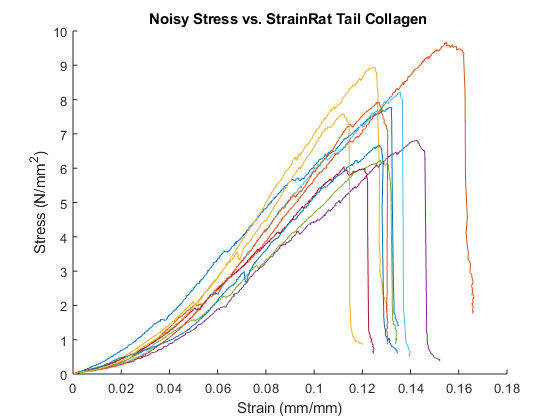

Contents
clear all
close all
Load Data - rat tail collagen
source_dirRTail = 'C:\Users\Mackenzie\Documents\MATLAB\BME302_Lab\LAB3\RatTailCollagen';
RatCollFile = dir(fullfile(source_dirRTail,'*.xlsx'));
for j = 1
[num,txt,raw] = xlsread(RatCollFile(j).name);
name = extractBefore(RatCollFile(j).name, '.xlsx');
name = strrep(name,'1','');
numtrials = numel(num(1,:))/2;
SET = struct('Material', {},...
'GageLength', {},...
'Diameter', {},...
'Area', {},...
'Position', {},...
'Load', {},...
'Stress', {},...
'Strain', {});
for k = 1:numtrials
i = 2*k-1;
s.Material = name;
s.GageLength = num(1,i+1);
s.Diameter = num(2,i+1);
s.Area = num(3,i+1);
s.Position = num(7:end,i);
s.Load = num(7:end,i+1);
s.Position(isnan(s.Position)) = [];
s.Load(isnan(s.Load)) = [];
s.Stress = (s.Load)./(s.Area);
s.Strain = (s.Position)./(s.GageLength);
SET(k) = s;
end
end
RatColl.(sprintf('file%d', j))=SET;
Mean & SD of measurements
MeanSD_rtail = struct('GageLengthMean', {},...
'DiameterMean', {},...
'AreaMean', {},...
'GageLengthSD', {},...
'DiameterSD', {},...
'AreaSD',{});
m.GageLengthMean = mean([RatColl.file1.GageLength]);
m.DiameterMean = mean([RatColl.file1.Diameter]);
m.AreaMean = mean([RatColl.file1.Area]);
m.GageLengthSD = std([RatColl.file1.GageLength]);
m.DiameterSD = std([RatColl.file1.Diameter]);
m.AreaSD = std([RatColl.file1.Area]);
MeanSD_rtail = m;
Stress Strain Plot - rat tail collagen
clf(figure(1))
figure(1)
for d = 1:numel(RatColl.file1)
StressNew = downsample(RatColl.file1(d).Stress, 4);
StrainNew = downsample(RatColl.file1(d).Strain, 4);
[RatColl.file1(d).StressNew] = StressNew;
[RatColl.file1(d).StrainNew] = StrainNew;
[Pks, Locs] = findpeaks(RatColl.file1(d).StressNew);
if length(RatColl.file1(d).StrainNew) >= Locs(end)
RatColl.file1(d).StrainNew(Locs(end):end) = [];
RatColl.file1(d).StressNew(Locs(end):end) = [];
end
F = find(round(RatColl.file1(d).StressNew, 2) == 0);
RatColl.file1(d).StrainNew(F) = [];
RatColl.file1(d).StressNew(F) = [];
RatColl.file1(d).StressNew = smooth((RatColl.file1(d).StrainNew), (RatColl.file1(d).StressNew),80);
[StrainNew, StressNew] = smoothing(RatColl.file1(d).StrainNew, RatColl.file1(d).StressNew);
X = max(RatColl.file1(d).StressNew);
Y = find(RatColl.file1(d).StressNew == X);
[RatColl.file1(d).StressNew] = RatColl.file1(d).StressNew(1:Y);
[RatColl.file1(d).StrainNew] = RatColl.file1(d).StrainNew(1:Y);
A = RatColl.file1(d).StrainNew;
B = RatColl.file1(d).StressNew;
[RatColl.file1(d).diff] = diff(RatColl.file1(d).StressNew)./diff(RatColl.file1(d).StrainNew);
C = RatColl.file1(d).diff;
RatColl.file1(d).diff = smooth(A(2:end), C, 0.1, 'loess');
[RatColl.file1(d).diff2] = diff(RatColl.file1(d).diff)./diff(RatColl.file1(d).StrainNew(2:end));
hold on
plot(RatColl.file1(d).Strain, RatColl.file1(d).Stress)
xlabel('Strain (mm/mm)');
ylabel('Stress (N/{mm}^2)');
title(['Noisy Stress vs. Strain', RatColl.file1(d).Material]);
hold off
hold on
xlim([0 0.18]);
ylim([0 10]);
hold off
end

Young's Modulus
P = zeros(1,20);
E = zeros(1,10);
YieldStress = zeros(1,10);
for d = 1:numel(RatColl.file1)
YieldStress(d) = RatColl.file1(d).StressNew(end);
for c = 2*d-1
P(c:c+1) = polyfit(RatColl.file1(d).StrainNew, RatColl.file1(d).StressNew, 1);
E(d) = P(c);
end
[RatColl.file1(d).E] = E(d);
[RatColl.file1(d).YS] = YieldStress(d);
[RatColl.file1(d).UStress] = YieldStress(d);
[RatColl.file1(d).UStrain] = RatColl.file1(d).StrainNew(end);
end
Mean & SD - mech props
props_MeanSD_rtail = struct('EMean', {},...
'YSMean', {},...
'UStrainMean', {},...
'UStressMean', {},...
'ESD', {},...
'YSSD', {},...
'UStrainSD', {},...
'UStressSD', {});
n.EMean = mean([RatColl.file1.E]);
n.YSMean = mean([RatColl.file1.YS]);
n.UStrainMean = mean([RatColl.file1.UStrain]);
n.UStressMean = mean([RatColl.file1.UStress]);
n.ESD = std([RatColl.file1.E]);
n.YSSD = std([RatColl.file1.YS]);
n.UStrainSD = std([RatColl.file1.UStrain]);
n.UStressSD = std([RatColl.file1.UStress]);
props_MeanSD_rtail = n;